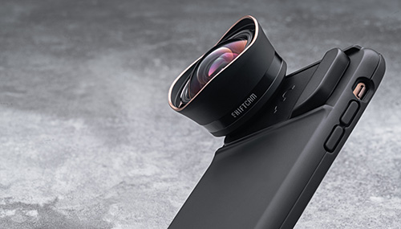
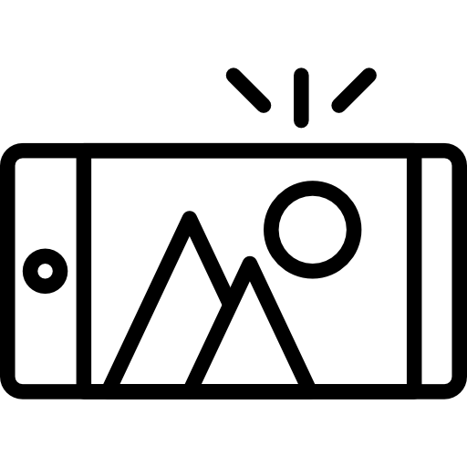

This is the world's first-ever made, 12mm Aspherical Ultra Wide Angle External Lens for mobile.It is the lens that combines the pocket-sized portability of your mobile phone and the high-quality capability of a DSLR camera.>
Indoor, outdoor, close-up or long shots122º angle of view, zero distortion
and edge to edge clarity
ShiftCam 2.0 Case for iPhone Xs Max, iPhone Xs,
iPhone XR, iPhone X, iPhone 7/8 Plus, iPhone 7/8

Combining the quality of DSLR and the versatility of mobile